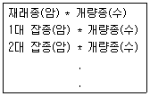

축산기사 (2007-09-02 기출문제)
1과목: 가축육종학
1. 돼지의 검정소 능력 검정에서는 검정 성적을 평가하는데 선발 지수를 사용하고 있다 이 선발 지수에 포함되지 않는 형질은?
- 한배 새끼수
- 일당 증체량
- 사료 요구율
- 등지방 두께
(정답률: 64%)

2. 다음은 어떤 교배법을 나타낸 것인가?

- 누진교배
- 2품종교배
- 계통교배
- 복교배
(정답률: 82%)
3. 생물의 일반적인 유전자들은 자연 돌연변이의 출현 빈도가 극히 낮은데 포유동물의 경우 1개의 유전자가 다음 세대에 변이를 일으킬 수 있는 빈도는 대체로 얼마 정도인가?
- 10_3 ~ 10_4
- 10_5 ~ 10_6
- 10_7 ~ 10_8
- 10_9 ~ 10_10
(정답률: 65%)
4. 다음 중 유전정보를 가진 물질이 가장 많이 존재하는 곳은?
- 리보솜
- 미토콘드리아
- 염색체
- 골지체
(정답률: 78%)
5. 닭에 있어서 장미관 흑색인 햄버그종과 단관백색인 레그혼종을 교배시키면 F1에서 볏의 모양과 우모색은 어떻게 발현되는가?
- 단관 백색
- 단관 흑색
- 장미관 백색
- 장미관 흑색
(정답률: 70%)
6. 상대적 선발반응의 크기가 가장 큰 것은?
- 가계선발
- 개체선발
- 가계 내 선발
- 개체와 가계의 결합선발
(정답률: 44%)
7. 젖소의 후대검정에 근거한 선발의 정확도를 높이는 방법 중 맞는 것은?
- 후대검정되는 자손수가 적어야 한다.
- 선발지수식에 포함되는 대상형질의 유전력이 높아야 한다.
- 세대간격이 짧아야 한다.
- 세대간격과 대상형질의 유전력이 낮아야한다.
(정답률: 50%)
8. 젖소의 선발시 선발 강도를 높이기 위한 방법은?
- 반복적으로 한 형질을 측정한다.
- 후대검정을 실시한다.
- 혈연관계를 이용하여 능력을 조사한다.
- 선발 대상군에서 선발 축의 수를 줄인다.
(정답률: 33%)
9. 세포의 불열과정 중에서 염색체의 형태와 수를 정확히 알 수 있는 단계는?
- 전기
- 중기
- 후기
- 말기
(정답률: 60%)
10. 두 형질간에 높은 유전 상관을 나타내는 경우 측정이 용이한 형질을 개량함으로써 측정이 곤란한 형질을 개량하는 선발 방법은?
- 결합선발
- 개체선발
- 간접선발
- 순차선발
(정답률: 75%)
11. 육우의 선발방법으로 맞지 않는 것은?
- 어미소의 도태는 자신의 능력과 자신이 낳는 송아지의 이유시 체중에 근거한다.
- 농가 암소의 인공수정용 종모우로 선발하는 방법은 당대 검정에 의한다.
- 육우의 능력을 평가하는 방법으로 이유시 체중을 보정하는 데에는 어미의 나이와 송아지의 성별을 고려한다.
- 종모우의 능력을 검정하는 형질에는 일당증체량, 사료효율 및 체형 등을 말한다.
(정답률: 44%)
12. 염색체에 대한 설명 중 틀린 것은?
- 동물의 염색체는 성염색체를 제외하고는 염색체의 크기, 모양, 중심립의 위치 등이 같은 2개의 염색체 쌍으로 되어 있다.
- 포유동물의 성염색체에는 X 와 Y염색체가 있으며, 자손의 성별은 어머니로부터 물려받는 성염색체에 의해 결정된다.
- 포유동물의 X염색체는 Y염색체 보다 크기가 크다.
- 조류에서 ZW의 성염색체를 가진 개체는 암컷이다.
(정답률: 74%)
13. 어느 형질의 표현형 표준편차는 100이고, 유전자형 표준편차는 50 이라 한다. 그렇다면 이 형질의 유전력은 얼마인가?
- 0.20
- 0.25
- 0.50
- 0.75
(정답률: 44%)
14. 유각(hh)과 무각(HH)인 소의 교배에서 태어난F1을 부모 중 유각인 소와 다시 교배시켰을 때 나타나는 자손들의 무각과 유각의 분리비는? (단, 유각은 완전 열성형질이다.)
- 3:1
- 1:1
- 2:1
- 7:1
(정답률: 53%)
15. 근교계통의 수가축과 근교되지 않은 암가축 사이의 교배에 의하여 생긴 자손은?
- topcross
- backcross
- criss-cross
- roation crossing
(정답률: 67%)
16. 단 1개의 유전자가 2개 이상의 형질발현에 관계하는 경위 유전자 작용은?
- 다면작용
- 상사작용
- 생리작용
- 변경작용
(정답률: 84%)
17. 비대립 유전자 간의 상호작용으로 닭의 완두관과 장미관의 F1에는 호두관이 되는데 F2에서의 벼슬은 어떤 비율로 나타나는가?
- 호두관 9, 장미관 3, 완두관 3, 단관 1
- 장미관 9, 완두관 3, 호두관 3, 단관 1
- 완두관 9, 장미관 3, 호두관 3, 단관 1
- 호두관 9, 장미관 3, 완두관 3, 단관 3
(정답률: 73%)
18. 다음 중 조합능력의 개량을 위한 육종법으로 가장 적합한 것은?
- 계통교배법
- 독립도태법
- 유전방안지법
- 상반반복선발법
(정답률: 70%)
19. 다음 중 산란지수를 옳게 설명한 것은?
- 일정기간의 총 산란수를 기간 내 매일 생존수로 나눈 것
- 일정기간의 총 산란수를 그 기간 최초의 수수로 나눈 것
- 일정기간의 총 산란수를 그 기간 마지막 날의 수수로 나눈 것
- 일정기간의 총 산란수를 그 기간 평균 생존수로 나눈 것
(정답률: 65%)
20. 쇼트혼의 모색에 관여하는 유전자는 R과 r이다. RR인 소는 적색, Rr인소는 조모색, rrdls 소는 백색이다. 1000두의 쇼트혼 집단을 조사하였더니 적색 810두, 백색 10두 이었다. 적색 유전자 R의 빈도는?
- 0.1
- 0.5
- 0.8
- 0.9
(정답률: 66%)
2과목: 가축번식생리학
21. 난소 낭종과 관련이 없는 것은?
- 무발정 증상
- 사모광증 증상
- 둔성발정
- 비유량이 많은 젖소에서 다발
(정답률: 27%)
22. 가축의 성 성숙에 미치는 주 요인이 아닌 것은?
- 영양공급
- 계절
- 온도
- 운동
(정답률: 62%)
23. 반추가축에서 분만의 개시와 관련된 태아와 모체와 호르몬 변화를 옳게 기술한 것은?
- 태아의 혈중 코르티솔 농도가 감소하면서 모체의 혈중 프로게스테론 농도는 감소한다.
- 태아의 혈중 코르티솔 농도가 증가하면서 모체의 혈중 프로게스테론 농도는 증가하고 에스티로젠 농도는 감소한다.
- 태아의 혈중 코르티솔 농도가 감소하면서 모체의 혈중 프로게스테론 농도는 증가한다.
- 태아의 혈중 코르티솔 농도가 증가하면서 모체의 혈중 프로게스테론 농도는 감소하고 에스테로젠 농도는 증가하다.
(정답률: 71%)
24. 영구황체 치료시에 사용하는 호르몬은?
- PGF2알파
- LTH
- STH
- MSH
(정답률: 74%)
25. 정자의 완성과정을 순서대로 나열한 것은?
- 골지기 - 두모기 - 첨체기 - 성숙기
- 골지기 - 첨체기 - 두모기 - 성숙기
- 두모기 - 골지기 - 첨체기 - 성숙기
- 두모기 - 첨체기 - 골지기 - 성숙기
(정답률: 87%)
26. 뇌하수체전엽에서 분비되는 당단백질호르몬은?
- 황체형성호르몬(LH)
- 임마혈청성 성선자극호르몬(PMSG)
- 임부흉모성 성선자극호르몬(HCG)
- 옥시토신
(정답률: 76%)
27. 성숙한 젖소에서 자연교배 또는 인공수정 적기는?
- 발정개시부터 발정종료까지
- 발정종료 전후의 4시간
- 발정개시 전후의 4시간
- 배란 전후의 4시간
(정답률: 69%)
28. 성숙한 수컷 포유동물의 부생식선이 아닌 것은?
- 랑게르 한스선
- 정낭선
- 전립선
- 카우퍼스선
(정답률: 77%)
29. 리피트 브리더(repeat breeders)의 원인이 아닌 것은?
- 수정장해가 있을 때
- 호르몬의 불균형 상태일 때
- 교배를 자주 시켰을 때
- 암축의 생식관 내 정자수송에 장해가 있을 때
(정답률: 64%)
30. 소의 유선발육에 관한 내용 중 틀린 것은?
- 일반적으로 유방의 발육은 체중증가에 의해서는 영향을 받지 않는다.
- 성성숙이 가까워지면 유방의 유선관계가 급속도로 발달한다.
- 초유구 및 백혈구 등이 출현하는 시기는 임신 9개월이다.
- 유방의 중량은 임신 후 최초의 3개월간은 비임신우와 거의 차이가 없다.
(정답률: 70%)
31. 세균성 감염에 의한 급ㆍ만성 전염병으로 유산을 일으키는 것은?
- 과립성 질염
- 소의 트리코모나스병
- 브루셀라병
- 톡소플라즈마병
(정답률: 70%)
32. 다음 중 스테로이드 호르몬은?
- 옥시토신
- 바소프레신
- 테스토스테론
- 프로스타글란딘
(정답률: 65%)
33. 난모세포의 발달과정에서 제1극체가 나타나 방출되는 곳은?
- 제1난모세포
- 제2난모세포
- 성숙난자
- 접합체
(정답률: 49%)
34. 호르몬 측정에 의하여 소의 임신을 조기 진단코자 할 때 주로 어느 호르몬을 측정하는가?
- 코티솔
- 에스트라디올
- 프로게스테론
- 임부흉모성 성선자극호르몬(HCG)
(정답률: 49%)
35. 수정란 이식의 기술에 관한 사항 중 틀린 것은?
- 수정란의 형태적 이상은 이식 후의 임신율을 저하시키는 결정적인 요인이 된다.
- 다배란 유도는 주로 임마혈청성 성선자극호르몬을 사용한다.
- 수정란 채취는 생체내외 채취법이 있다.
- 공란우와 수란우의 발정주기의 동기화 조절은 수태율과는 무관하다.
(정답률: 66%)
36. 다음 중 인공 수정의 장점이 아닌 것은?
- 우수 종모축의 이용효율 증대
- 생식기 질병의 예방
- 우수 종빈축의 이용효율 증대
- 후대검정의 촉진
(정답률: 30%)
37. 소에서 수정란 이식의 장점이 아닌 것은?
- 계획적인 가축생산이 가능하다.
- 우수한 빈축의 자축을 많이 생산할 수 있다.
- 가축 대신 수정란의 수송으로 경비를 절감시킬 수 있다.
- 호르몬 처리에 의한 개체반응이 심하지 않기 때문에 확실하고 효과적인 채란이 가능하다.
(정답률: 58%)
38. 소의 발정주기를 동기화시키기 위하여 가장 흔히 단독으로 사용하는 것은?
- 프로락틴
- 임마혈청성 성선자극호르몬(PMSG)
- 임부흉모성 성선자극호르몬(HCG)
- 프로스타글란딘(PGF2알파)
(정답률: 65%)
39. 다음 중 정자를 만들어 내는 기관은?
- 정관
- 정소
- 정소상체
- 정관 팽대부
(정답률: 61%)
40. 다음 중 단일성(short day) 계절번식 가축은?
- 소
- 말
- 면양
- 돼지
(정답률: 69%)
3과목: 가축사양학
41. 가축사료 중 갑상선 조직에 이상을 가져오는 사료는?
- 감자
- 대두박
- 채종박
- 옥수수
(정답률: 75%)
42. 영양소의 분류 중 가용무질소물(NFE)에 해당되는 것은 무엇인가?
- 스테롤, 철
- 지방산, 글리세롤
- 셀룰로오스, 섬유소
- 포도당, 단당류
(정답률: 57%)
43. 옥수수 사일리지를 10톤 조제하고자 한다. 영양소(단백질원)강화 목적으로 요소를 첨가하고자 할 때 최대로 혼합 가능한 양은?
- 5킬로
- 10킬로
- 50킬로
- 100킬로
(정답률: 50%)
44. 비육돈의 출하체중은 원칙적으로 어떤 기준에서 결정되는가?
- 사료효율과 시장성
- 노동력의 제한
- 사육면적의 협소
- 사료섭취량의 증가
(정답률: 80%)
45. 사료작물 영양가치는 성숙기가 진행됨에 따라 변하게 되는데 그 변화는 어떤 것인가?
- 단백질과 이용 가능 탄수화물이 감소된다.
- 리그닌이 감소된다.
- 비단백태 질소 화합물 함량이 증가한다.
- 칼슘과 인의 함량이 증가한다.
(정답률: 59%)
46. 비육우의 사양을 바르게 설명한 것은?
- 비육말기에 단백질을 많이 공급할수록 육질이 더 좋아진다.
- 비육중인 가축에게 수용성 비타민의 공급은 필수적이다.
- 대두박이나 옥수수를 많이 급여하면 체지방이 연해진다.
- 고기의 상품가치는 연지방이 많을수록 좋다.
(정답률: 64%)
47. 비타민 중 판토텐산은 옥수수와 대두박에는 부족하고, 알팔파 분말, 어간, 밀기울 등에는 풍부하다. 판토텐산이 부족했을 경우 돼지에게 나타나는 증상이 아닌 것은?
- 번식돈의 설사
- 식욕 및 음수량 감소
- 보행불안
- 빈혈증
(정답률: 53%)
48. 지방산 합성경로에 필요한 보조인자 NADPH는 어떠한 과정에 의하여 생성되는가?
- 글리코겐의 분해
- 글루코오스의 신합성
- 육탄당 일인산회로
- TCA회로
(정답률: 52%)
49. 다음 중 지방의 소화 흡수 과정과 관련이 없는 것은?
- Emulsfication
- Transamination
- Micelle
- chylomicorn
(정답률: 55%)
50. 열적중성역에서의 체열발생과 관계없는 설명은?
- 발열량은 섭취 에너지량에 따라 증강
- 온도변화에 따라 발열량이 가장 큰 온도영역
- 체온의 항상성 유지에 필요한 열량은 방열량과 일치
- 화학적 조절이 필요 없을 때의 온도 영역
(정답률: 38%)
51. 착유우의 유지율이 감소되었을 때 유지율 향상을 위한 사양관리 방법으로 적합한 것은?
- 박편된 곡류를 다량 급여한다.
- 요소와 같은 비단백태 질소를 급여한다.
- 사료의 기호성을 높이기 위하여 당밀을 급여한다.
- 양질의 조사료를 충분량 급여한다.
(정답률: 66%)
52. 다음 중 영양소의 흡수가 주로 일어나는 부위는?
- 위
- 소장
- 맹장
- 대장
(정답률: 71%)
53. 송아지의 성장단계에 따른 지방 발달 순서는?
- 신장지방-피하지방-근간지방 및 근내지방
- 피하지방-신장지방-근간지방 및 근내지방
- 피하지방-근간지방 및 근내지방-신장지방
- 신장지방-근간지방 및 근내지방-피하지방
(정답률: 40%)
54. 곡류의 이용성을 높이기 위하여 전분을 알파화시키 가공처리가 아닌 것은?
- 증기압편(후레이크)
- 가압압편(후레이크)
- 건열처리가공
- 수침
(정답률: 74%)
55. 다음 중 브로일러 배합사료에서 칼슘 : 인의 비율로 가장 적당한 것은?
- 1:1
- 2:1
- 3:1
- 4:1
(정답률: 59%)
56. 다음 영양소 중 무기질인 것은?
- 탄수화물
- 지방
- 단백질
- 광물질
(정답률: 84%)
57. 송아지의 포유작업을 바르게 설명한 것은?
- 전지분유는 대용유로서 부적당하다.
- 모유대신 탈지유를 급여해도 된다.
- 분만 후 반드시 초유를 급여할 필요는 없다.
- 대용유는 빈혈방지를 위해 반드시 공급해야 한다.
(정답률: 39%)
58. 다음 중 필수 아미노산인 페닐알라닌을 대치할 수 있는 아미노산은?
- 프롤린
- 알라닌
- 시스틴
- 티로신
(정답률: 48%)
59. 산란계의 경우 알이 배란되어 난관을 통과하여 산란하기까지의 평균 소요시간은?
- 10-14시간
- 15-20시간
- 24-25시간
- 30-31시간
(정답률: 73%)
60. 가소화 영양소 총량 계산시 지방은 단백질이나 탄수화물보다 몇 배의 에너지를 더 내는가?
- 2.⑤배
- 2.15배
- 2.25배
- 2.35배
(정답률: 94%)
4과목: 사료작물학 및 초지학
61. 어린 송아지에게 급여하면 설사를 방지하고 위의 발달을 촉진시키는 효과가 있는 것은?
- 청초
- 건초
- 고수분 사일리지
- 저수분 사일리지
(정답률: 62%)
62. 옥수수를 수확적기 보다 일찍 수확하여 사일리지를 조제할 경우의 설명으로 올바른 것은?
- 수확시 알곡손실이 많고 토사의 혼입이 증가하므로 첨가제를 사용한다
- 배즙량이 증가하므로 배수가 용이한 사일로를 이용한다.
- 프로피온산을 원물 무게에 대하여 5%정도 첨가한다.
- 암모니아처리를 한다.
(정답률: 36%)
63. 청예맥류(호밀등)로 건초를 제조할 때 건물 및 양분 수량을 높여 품질이 좋은 건초를 만들 수 있는 수확적기는?
- 이른봄 생육초기
- 수잉후기 ~ 출수기
- 개화기 ~ 유숙기
- 호숙기 ~ 황숙기
(정답률: 52%)
64. 화본과 목초의 예취의 적기는?
- 개화직후
- 출수직전이나 출수 직후
- 개화 만개시
- 종실의 유숙기
(정답률: 64%)
65. 두과의 근류균 접종방법에 대한 설명으로 틀린 것은?
- 배양된 근류균의 혼탁액을 종자와 섞어 파종한다.
- 교호 접종균에 속하는 목초의 뿌리 부근의 흙을 햇볕에 잘 건조 후 목초와 혼합 파종한다.
- 화이트클로버의 근류균은 알팔파에는 접종효과가 거의 없다.
- 근류균에 접종된 종자는 비료살포와 동시에 파종해서는 안 된다.
(정답률: 34%)
66. 중북부지방의 작부 방식에 있어 옥수수를 주 작물로 했을 때 그 전후 작물로서 가장 적합한 것들로만 구성된 것은?
- 수단그라스, 연맥, 무
- 호맥, 유채, 연맥
- 피, 유채, 이탈리안라이그라스
- 이탈리안라이그라스, 호맥, 수수
(정답률: 46%)
67. 옥수수 후작이나 답리작으로 많이 이용되는 호밀에 과한 설명으로 가장 거리가 먼 것은?
- 내한성이 강한 호밀의 특성을 살리기 위해서는 월동이 가능한 범위내에서 늦게 파종하는 것이 좋다.
- 옥수수의 파종을 지연시키지 않으려면 조생품종의 호밀을 파종하는 것이 좋다.
- 일반적으로 조생종은 조가 수확할 때, 만생종은 만기수확 할 때 수량이 놓아진다.
- 옥수수 후작으로 일찍 파종하면 가을에 가벼운 방목이나 높은 예취로 이용도가 가능하다
(정답률: 50%)
68. 일정면적의 초지에 방목할 소의 두수를 계산할 때 옳은 식은?
- 1일 1두당 채식량 * 방목일수/제곱 미터당 초생량 * 채식율
- 제곱미터당 초생량 * 채식율 * 방목일수/1일 1두당 채식량 * 면적
- 1일1두당 채식량 * 방목일수/제곱미터당 초생량 * 방목두수
- 제곱미터당 초생량 * 채식율 * 면적/1일 1두당 채식량 * 방목일수
(정답률: 37%)
69. 북방형 목초(한지형)의 특징인 것은?
- 25도씨 이상의 기온에서 잘 자란다.
- 하고현상을 나타낸다.
- 옥수수는 대표적인 한지형 사료작물이다.
- 고랭지에서만 생육이 가능하다.
(정답률: 60%)
70. 다음 건초의 가공품 중 목건초의 세절편을 압축 성형기를 통하여 각형으로 성형한 것은?
- 목초분말
- 펠렛티드 헤이
- 헤이 큐브
- 헤이 웨이퍼
(정답률: 64%)
71. 사료작물 중 직립형 줄기를 갖는 것은?
- 레드클로버
- 칡
- 화이트클로버
- 벳치
(정답률: 28%)
72. 사일지지용 사료작물은 재배, 이용 목적상 어떤 특성을 갖고 있는 것을 우선적으로 선택하여야 하는가?
- 초장이 짧은 것
- 수분함량이 많은 근채류
- 당분함량과 수량이 많은 것
- 다년생 목초류
(정답률: 49%)
73. 다음 중 알팔파에서 트리핑을 가장 잘 설명한 것은?
- 분얼 촉진을 의미한다.
- 두과작물의 화서(꽃차례)를 의미한다.
- 양분을 공급하여 주는 역할을 한다.
- 꽃에서 벌에 의한 수분작용을 말한다.
(정답률: 44%)
74. 북방형 사료작물에 속하는 것은?
- 수수
- 수단그라스
- 티모시
- 버뮤다그라스
(정답률: 47%)
75. 다음 사료작물 중 근류균주의 상호접종이 될 수 있는 조합은 어느 것인가?
- 화이트클로버, 헤어리베치
- 알팔파, 화이트클로버
- 대두, 스위트클로버
- 알팔파, 스위트클로버
(정답률: 33%)
76. 가축의 구비를 사용하는데 옳은 방법은?
- 봄철 방목지에 풀이 잘 자랄 때 뿌려준다.
- 방목지에 떨어진 우분은 자연 시비으므로 그냥 둔다.
- 풋베기 재배에는 생분을 기비나 추비로 사용한다.
- 새로 조성하는 초지와 이른 봄 목초가 생육하기 전에 뿌려준다.
(정답률: 48%)
77. 사일지지용 옥수수의 수확 적기는?
- 유숙기
- 호숙기
- 황숙기
- 완숙기
(정답률: 68%)
78. 3헥타의 방목지에 채중 500킬로인 젖소 10마리와 체중 250킬로인 송아지 4마리를 150일간 방목하였다면 단위 면적당 방목일은?
- 1000
- 600
- 1500
- 1080
(정답률: 63%)
79. 사료용 유채의 특징이라고 할 수 없는 것은?
- 내한성이 강하다.
- 단기간 재배로 수량이 많다.
- 맥류보다 토양 적응력이 높다.
- 사일리지 제조에 적합하다.
(정답률: 49%)
80. 사일리지용 옥수수(잡종)를 재배할 때 비료 3요소의 시비는 필수적이다. 헥타르당 성분량으로 몇 킬로의 질소를 주는 것이 가장 좋은가?
- 10~50킬로
- 70~150킬로
- 200~3000킬로
- 400~600킬로
(정답률: 37%)
5과목: 축산경영학 및 축산물가공학
81. 다음 중 경영 조직의 목표를 달성하기 위한 방법이 아닌 것은?
- 경영주의 능력만을 고려하여 각 부문을 조직한다.
- 각 부문 담당자의 책임체계를 분명히 한다.
- 인적 자원에 있어서는 종업원의 창의력이 충분히 발휘될 수 있도록 조직한다.
- 경영의 목표 및 각 부문별 계획을 능률적, 효율적으로 달성할 수 있도록 조직 상호간의 관계를 파악하여 조직한다.
(정답률: 69%)
82. 육계 계열화의 효과가 아닌 것은?
- 생산농가의 소득 안정화 가능
- 생산농가의 독자경영 가능
- 생산비 절감 가능
- 제품 규격화로 품질 향상
(정답률: 69%)
83. 다음 중 고정비용(불변 비용)에 해당하는 것은?
- 사료비
- 감가상각비
- 노동비
- 수도광열비
(정답률: 53%)
84. 다음 중 수익성 지표에 해당되지 않는 것은?
- 순수익
- 소득
- 1인당 가족 노동보수
- 노동 생산성
(정답률: 48%)
85. 가축자본재 중 유동자본재에 해당하는 것은?
- 젖소 경산우
- 한우 번식우
- 한우 비육우
- 산란계
(정답률: 67%)
86. 비육우 경영의 경영개선 방법으로 적합하지 않는 것은?
- 판매방법의 개선
- 사양규모의 확대
- 노동력 확대
- 사료급여의 합리화
(정답률: 45%)
87. 다음 중 양돈 번식경영의 수익성 향상방안으로 적합한 것은?
- 육성율을 감소시킨다.
- 사료요구율을 증가시킨다.
- 이유자돈두수를 증가시킨다.
- 비육돈 출하두수를 증가시킨다.
(정답률: 61%)
88. 다음 중 축산 경영 계획법의 종류가 아닌 것은?
- 정율법
- 표준 계획법
- 직접비교법
- 예산법
(정답률: 57%)
89. 낙농경영에서 유사비를 올바르게 표기한 것은?
- 배합사료 1킬로의 가격/원유 1킬로의 가격
- 원유 1킬로의 가격/조사료 1킬로의 가격
- 원유 생산량/사료비
- 사료비/원유 생산량
(정답률: 14%)
90. 우리나라 낙농 경영의 특성에 해당되지 않는 것은?
- 유제품보다 시유판매 의존도가 높다.
- 전형적인 초지방목형 낙농 경영 형태를 띠고 있다.
- 육성우(착유우 후보축) 전물 목장이 발달되어 있지 않다.
- 낙농가가 경기지역에 가장 많이 분포되어 있다.
(정답률: 52%)
91. 한우 농가의 경영개선에 의한생산비 절감방안으로 적합하지 않은 것은?
- 일당 증체량 증대
- 분뇨처리시설의 현대화
- 번식률 향상
- 합리적인 사료급여
(정답률: 66%)
92. 다음 중 사료 요구율이 맞게 표현된 것은?
- 사료급여량/사료구입량
- 축산물생산량/사료급여량
- 사료급여량/축산물생산량
- 구입사료비/유대
(정답률: 49%)
93. 비육돈의 구입시 체중이 10킬로, 판매시 체중이 106킬로이고 비육일수가 160일이라면 일당 증체량은?
- 0.6킬로
- 0.7킬로
- 0.8킬로
- 0.9킬로
(정답률: 67%)
94. 축산경영자가 자원을 합리적으로 이용함에 있어 지침을 주고자 하는 세 가지 기본관계와 거리가 먼 것은?
- 생산요소 상호간의 관계
- 생산요소와 생산물간의 관계
- 생산물 상호간의 관계
- 생산물판매 상호간의 관계
(정답률: 49%)
95. 축산경영에 대한 설명 중 맞는 것은?
- 축산경영의 실태는 나라와 시대에 따라서 항상 같다.
- 축산경영은 축산업을 운영하는 것으로 축산물을 최대로 생산함을 의미한다.
- 축산경영이란 축산업을 조직하고 운영하기위해서 무제한적인 자원으로 축산물을 생산함을 의미한다.
- 축산경영이란 축산업의 목표를 달성하기 위해서 경영요소를 효율적으로 결합하여 이용하는 합리적인 경영활동을 말한다.
(정답률: 73%)
96. 다음 중 축산경영의 경제적 특징에 해당되지 않는 것은?
- 농산물의 이용증진
- 토지와 직접적 관계
- 노동력의 이용증진
- 자금회전의 원활화
(정답률: 42%)
97. 축산부문에서 노동능률의 향상 방법으로 적합하지 않은 것은?
- 노동수단의 고도화
- 작업의 복잡화
- 작업의 분업화와 협업화
- 작업방법의 표준화
(정답률: 68%)
98. 축산경영자의 경제적 기능에 속하지 않는 것은?
- 가축의 종류를 선택하고 결정한다.
- 가축의 생산순서와 생산규모를 경정한다.
- 경영성과를 분석하고 경영계획을 세운다.
- 경영에 채용할 생산기술을 결정한다.
(정답률: 48%)
99. 기업적 축산경영의 궁극적인 목표는?
- 축산 총수입을 극대화 하는 것
- 축산 순수익을 극대화 하는 것
- 축산물 생산을 최대로 하는 것
- 축산 경영비용을 최소화 하는 것
(정답률: 70%)
100. 육계에 대한 사료 급여량(X)과 출하시의 체중(Y)과의 관계가 Y=1+0.5X-0.25X제곱이고, 육계용 사료가격(Px)이 킬로당 250원, 육계 출하가격(Py)이 킬로당 1000원이라면 수익이 최대가 되는 사료 투입수준은?
- 0.5
- 1.0
- 1.5
- 2.0
(정답률: 53%)